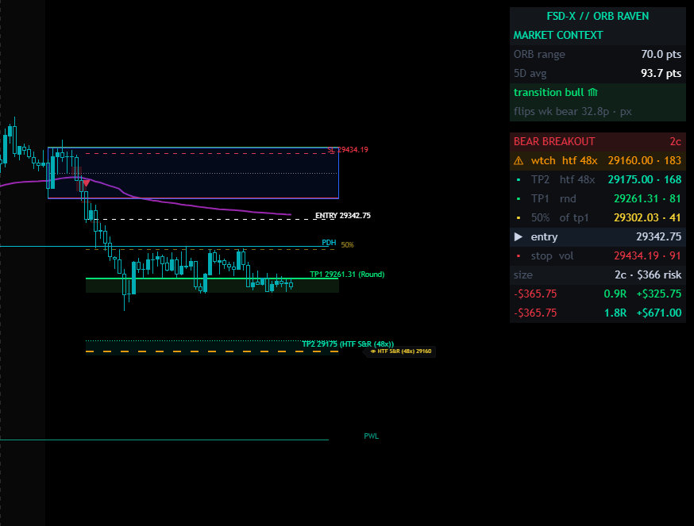

Every breakout. All the levels.
FSD-X ORB Raven marks every opening range breakout on the chart, in both directions, and draws the entry, the stop, both targets and your position size for each one. It doesn't decide which ones are worth taking. That part stays yours.
Includes Nexus 2.0 and the full member platform. Longer terms work out to $31.25/month. Cancel anytime.
Raven is the companion to ORB PRO (Knightfall), not a replacement for it. Same opening range detection. Same stop placement. Same target selection. The difference is one thing.
Grades every breakout as it forms, filters out the ones that don't meet its conditions, and sizes the position according to that grade. It has an opinion about which mornings are worth trading, and it acts on it.
Draws every breakout, both directions, with the same stop and target engine underneath. No grade, no filter, nothing held back. The read is yours.
Who it's for. Traders who already have their own read on the market and want the levels drawn properly — where the opening range sits, where the stop belongs, where a realistic target is, and what size their risk allows. If you want the system to tell you when to trade, Knightfall is the product, not this one.
All of it is on the chart, and all of it updates the moment price breaks the range.
Every target is tagged with the kind of level it came from, so you know what you're aiming at:
VWAP as context · higher-timeframe trend state · prior day and prior week levels · fair value gap boxes · Light Mode for light-background charts.

A bear breakout, marked. Entry, stop and both target zones drawn, each target tagged with the kind of level it came from — TP1 a round number, TP2 higher-timeframe S/R. The panel carries the range width against its recent average, the trend state, the level stack by distance, and the contracts your risk allows with the real dollar figure beside it.
Read this part properly. For the right trader it's the reason to buy it, and if it isn't, you want to know now rather than after.
Everything in Nightwing, plus the Raven indicator.
The indicator. Invite-only on TradingView, granted to your username.
Chrome side panel — position sizing, economic calendar, multi-timeframe analysis, trade logging, playbook and checklists.
Dashboard, trade journal, backtest workspace, broker importer, prop-account trackers and the knowledge base.
#fsd-x-orb-raven in the FSD-X Discord, for the people running this indicator. It's on the free side, so you can read it before you buy.
The other half of what you're buying
Raven draws the levels. Nexus is what sits beside them — five tools in a side panel docked to the TradingView chart, most of which work on whatever you happen to be trading.

The panel docks to the right of the TradingView chart and stays there while you work. Above, the Optimizer part-way through a sweep — it reports the combination it is on, how far through it is and how long is left, and can be stopped at any point.
Open any TradingView strategy's settings dialog and Nexus reads its inputs straight off the screen. Give each one a minimum, a maximum and a step, run the sweep, and read the combinations back ranked. It is not limited to our scripts — it optimises whatever strategy is on your chart.
Presets for Apex, TopStep, MFF and E8, or set your own account size, daily drawdown, trailing or end-of-day drawdown and profit target. Feed it your journal and it simulates the evaluation, including how the result changes with contract count.
Simulated outcomes from your own past trades. Hypothetical, and not a prediction that any evaluation will pass.
Drop in your entry, confirmation and trend charts and get them read as one picture, with your ticker, strategy and maximum risk as context. It is AI-assisted and it says so in the panel — a second opinion to argue with, not an instruction.
Position calculator for futures and forex, micro or standard, sized off your stop to a target R:R. Plus a watchlist scanner, news headlines, an economic calendar and an options flow reader.
Log a trade without leaving the chart — entry, exit, stop, both targets, tags, notes and a screenshot. Then history and stats: win rate, net P&L, long versus short, performance by day, drawdown from peak. Export to CSV or PDF.
Upload a CSV, keep each run as its own session, and read the results back the same way you read your live record. Sessions sync with the backtest workspace on this site.
Your rules, setups and goals, plus a pre-trade checklist you tick off before entering. Daily rules and drawdown-protection rules live here too, and all of it syncs with the playbook on this site.
The panel and the site are one account, not two
This is the difference between Nexus and every other browser extension you have tried. It is not a standalone tool that happens to share a login — it reads and writes the same data as the platform on this site, both directions, automatically.
Log a trade in the panel while the chart is still in front of you, and it is in your journal on this site before you have closed the tab.
Upload a backtest CSV on the site and the session is there in the panel's Backtest tab, ready to read against the chart.
Your playbook is one list. Rules, setups, goals and the pre-session checklist — tick something off in the panel and the site knows.
Accounts and defaults follow you. Tracked accounts, your usual ticker, timeframe and contract count are set once and apply in both places.
Which is why buying one without the other would not make sense — and why they are never sold apart.
This is the actual workspace, not a mockup. Pick a tool to see it.


Real screenshots of the live workspace. Figures shown in them are illustrative and are not a representation that any account will perform similarly.
ORB PRO (Knightfall) and its grading, the Auto Trader, Stack V1, the Volume Engine, SCOUT live alerts, the live trade room, or the VIP Discord channels. Those are part of the full FSD-X membership.
The free side of the Discord is open to everyone either way — including #fsd-x-orb-raven, which is yours. Join free →
Full members already have Raven — it's included in the membership at no extra cost.
Then $39.99 per month. Cancel anytime before the trial ends and you're not charged.
Billed every 3 months. No free trial on this plan — billing starts immediately.
Billed every 6 months. No free trial on this plan — billing starts immediately.
Billed once a year. No free trial on this plan — billing starts immediately.
The $39.99 monthly plan includes 7 days free. Longer terms bill immediately.
Move to the full membership whenever you want the graded system, and your journal and backtests come with you.
Raven is included in the full membership — don't buy this. Claim it from your Whop dashboard the same way you claimed the rest, and see the Getting Started guide if you need the steps.
Instant, and exactly the same as every other FSD-X product. You subscribe, you claim, it's on your chart.
Whop asks for it during signup. Use the username from your TradingView profile, not your email — it's case sensitive, and it's what the script gets granted to.
Invite-only scripts have to be claimed before TradingView will show them. Open your membership on Whop, click Claim next to the TradingView option and confirm the username.
Open TradingView, click Indicators, and find Raven under Invite-only scripts. It can take a few minutes to appear after claiming.
Then two more, the same as every FSD-X product: create your site account by signing in with Whop, which unlocks the platform and reads your licence automatically, and activate Nexus by copying your licence key from the Software tab on Whop and pasting it into the extension. The Getting Started guide walks all of it end to end. If the script doesn't appear on TradingView, a mistyped username is almost always why — message us in Discord or at fsdxteam@gmail.com and we'll correct it.
It doesn't track outcomes. Raven marks the breakout and draws the levels and stops there — it never finds out what happened next. Knightfall is the product with a tracked strategy behind it.
Because it shows every breakout. There's no filter. Deciding which ones to take is your job in this product — that's the whole design.
Levels are calculated values and aren't rounded to the instrument's tick size. Round to the nearest valid tick when you place the order.
The displayed figure accounts for a small buffer applied to target detection, so it's the realistic number rather than the raw one. Working as designed.
Targets can shift slightly after the level is chosen, from the offset setting and the minimum R:R threshold. The tag names the reference it started from.
Ghost lines clear when price breaks the opposite side of the range. Live lines clear at the session reset.
Any time, through Whop. Your journal entries, tracked accounts and backtest history stay attached to your site account, so nothing is lost when you move up.